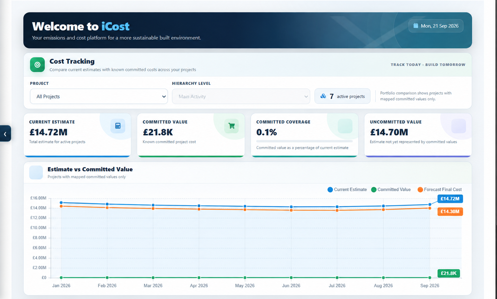
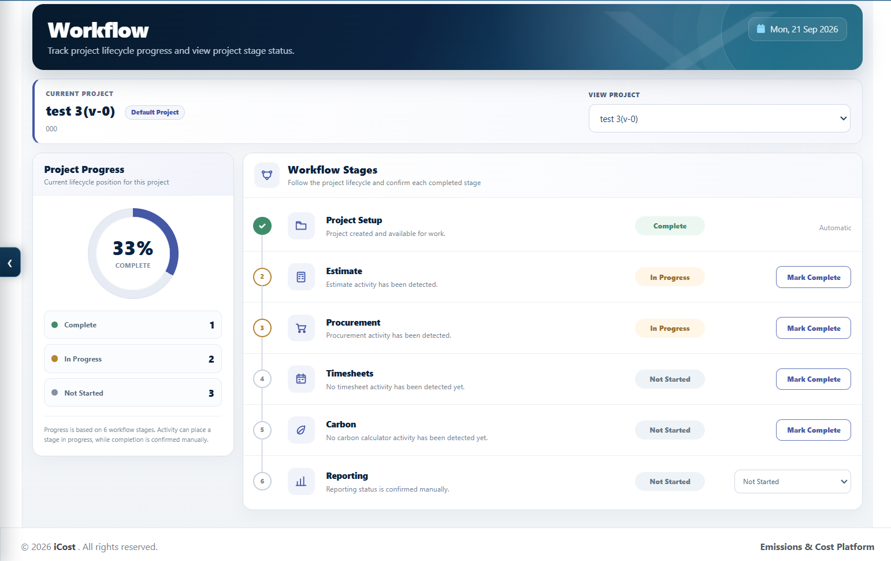
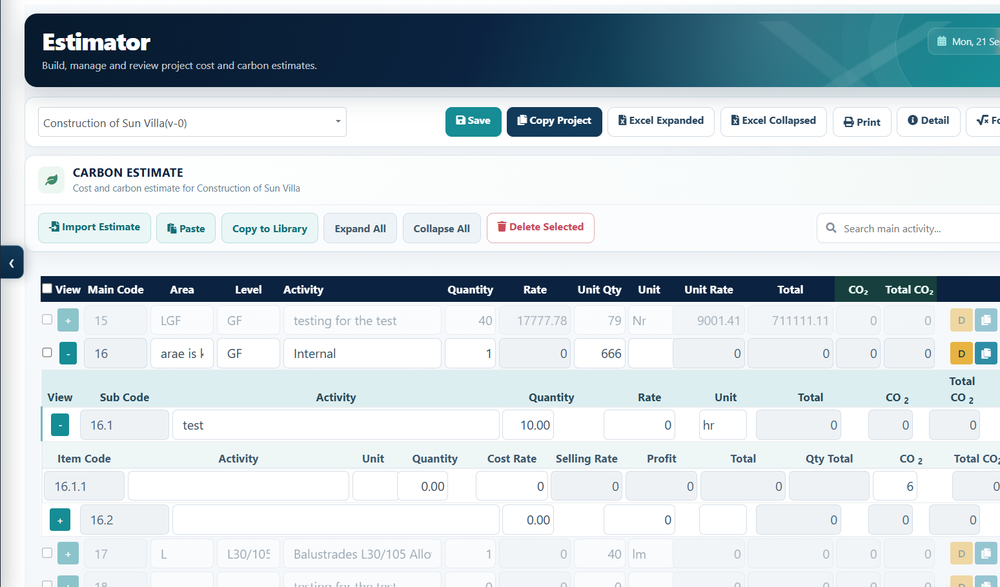
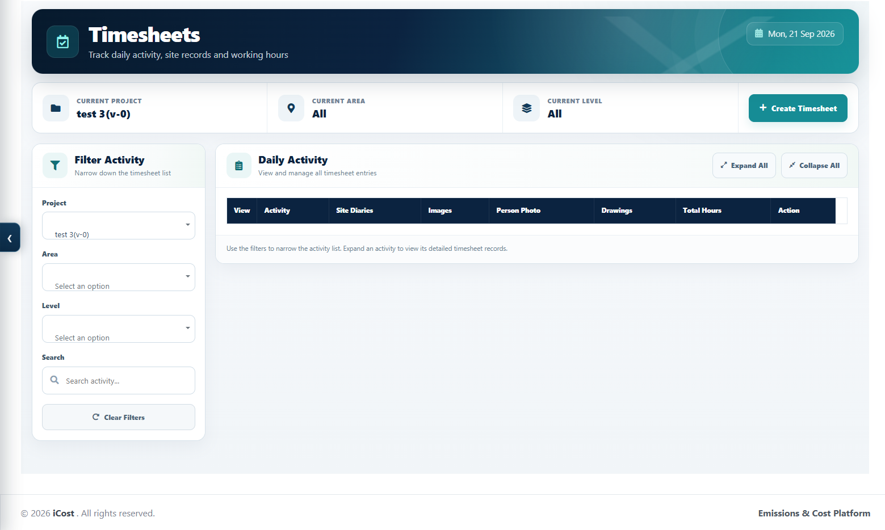

ESTIMATING & BOQ
Import client BOQs, structure project activities, build cost rates, apply margins and lock final tender baselines.
- Excel / CSV BOQ import
- Structured estimating
- Margin calculation
- Estimate revisions
- Final estimate locking
Construction Commercial & Carbon Management Platform
From BOQ and estimating to supplier procurement, purchase orders, labour tracking and embodied carbon, I-Cost gives commercial teams one connected view of project performance.
7-DAY FREE TRIAL · NO BANK CARD REQUIRED · £35 / USER / MONTH
Video preview is unavailable. I-Cost commercial overview uses demonstration project data.
Built for UK contractors & commercial teams
The platform in practice
Disconnected spreadsheets leave teams piecing the story together. I-Cost connects the baseline, commitments and delivery records in one commercial workflow.
01 / Cost visibility
Compare current estimates, committed value and forecast final cost across active projects.

02 / Connected delivery
Follow project setup, estimating, procurement, timesheets, carbon and reporting through a visible lifecycle.

03 / The commercial baseline
Create detailed cost and carbon estimates that remain connected to procurement and project delivery.

04 / Site to commercial team
Link daily activity, records and working hours back to the commercial picture.

Connected from the start
Bring the key stages of project cost management into one connected workflow.
Import client BOQs, structure project activities, build cost rates, apply margins and lock final tender baselines.
Move from estimate data into supplier RFQs and purchase orders without rebuilding project information.
Track site operative and staff time against real project activities and approval workflows.
Calculate embodied carbon alongside project cost using UK ICE and custom carbon factors.
A clearer commercial position
I-Cost brings estimates, commitments, forecast movement and delivery data together so commercial teams can act earlier.
The baseline against which delivery is measured.
The cost already committed to suppliers and packages.
The expected cost position as the project develops.
Cost movement and risks that need commercial attention.
Commercial and sustainability teams, connected
Every estimate line can carry both a financial rate and an embodied-carbon factor, allowing commercial and sustainability teams to work from the same project quantities and data.
Illustrative values only. Margin is calculated as a percentage of the selling rate; carbon uses the selected factor.
Report from live project data
Generate commercial, project, purchase order, timesheet and carbon reports directly from live project data.
Control who can see and edit project information using construction-specific roles, granular permissions and project-level access.
Try I-Cost
Start with 7 days of full platform access. No bank card required.
£35 per user / month after trial. View pricing
Protect the margin you already won.
We will help identify the commercial controls, information gaps and recovery opportunities worth addressing first.
Prefer a guided conversation? Start with a demo or a commercial health check.
Book a Demo